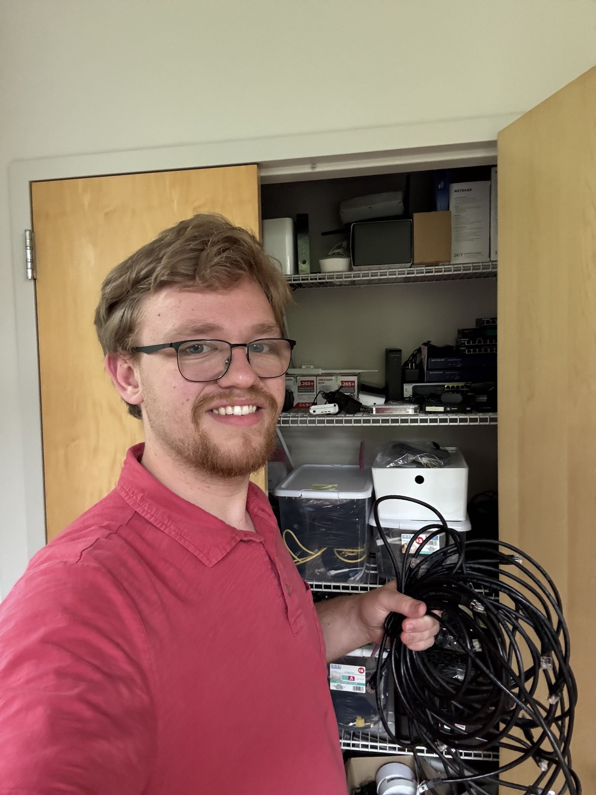
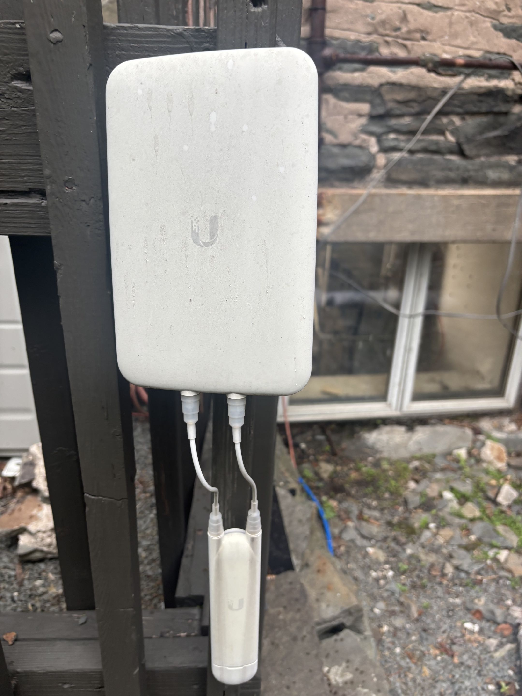
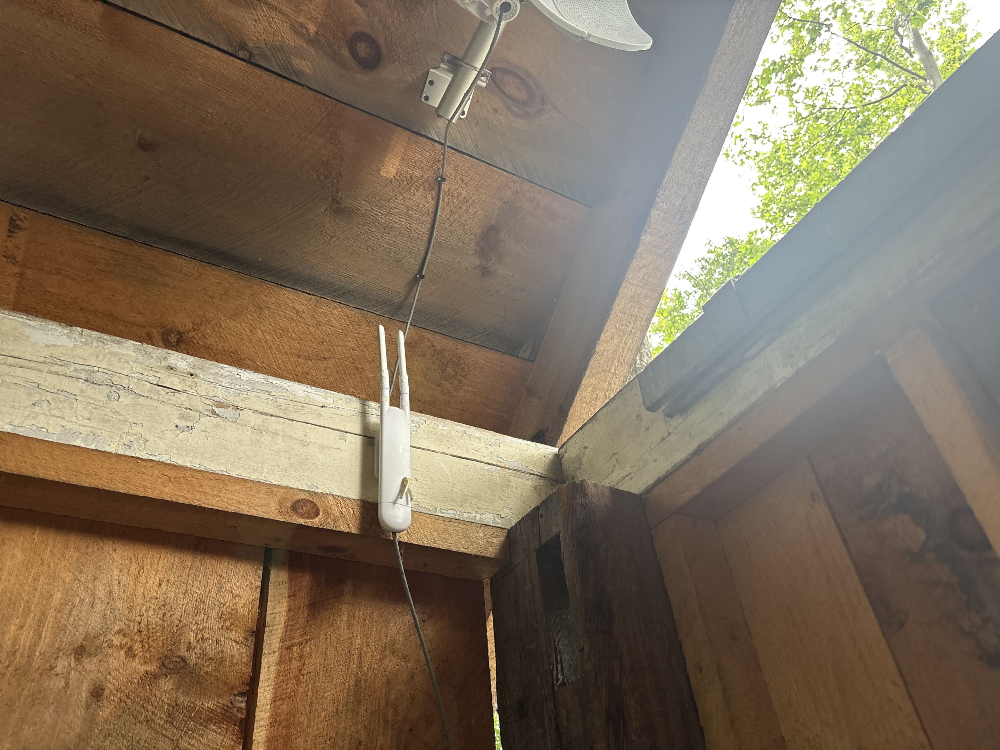
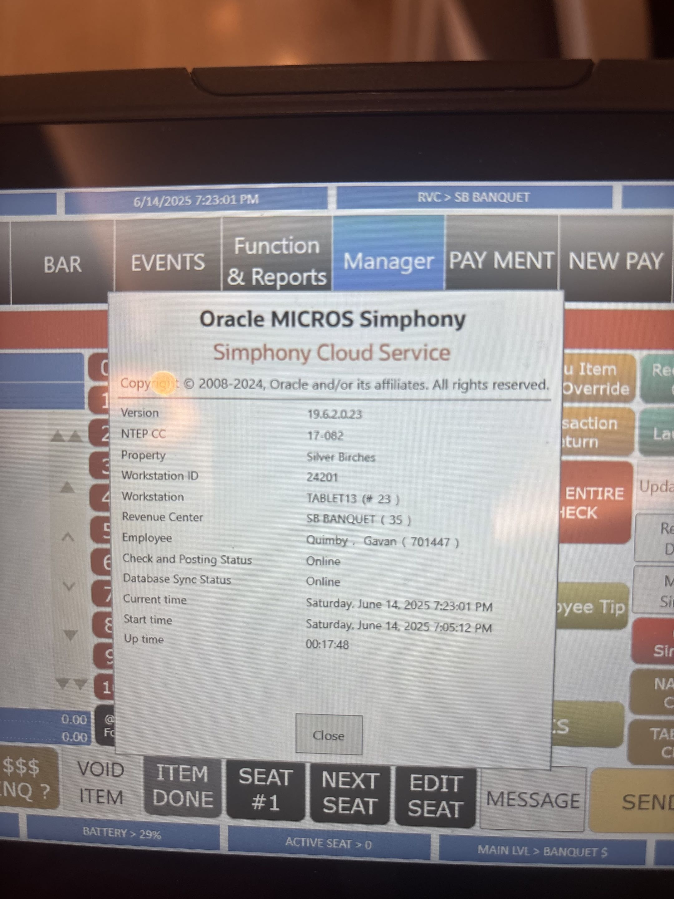
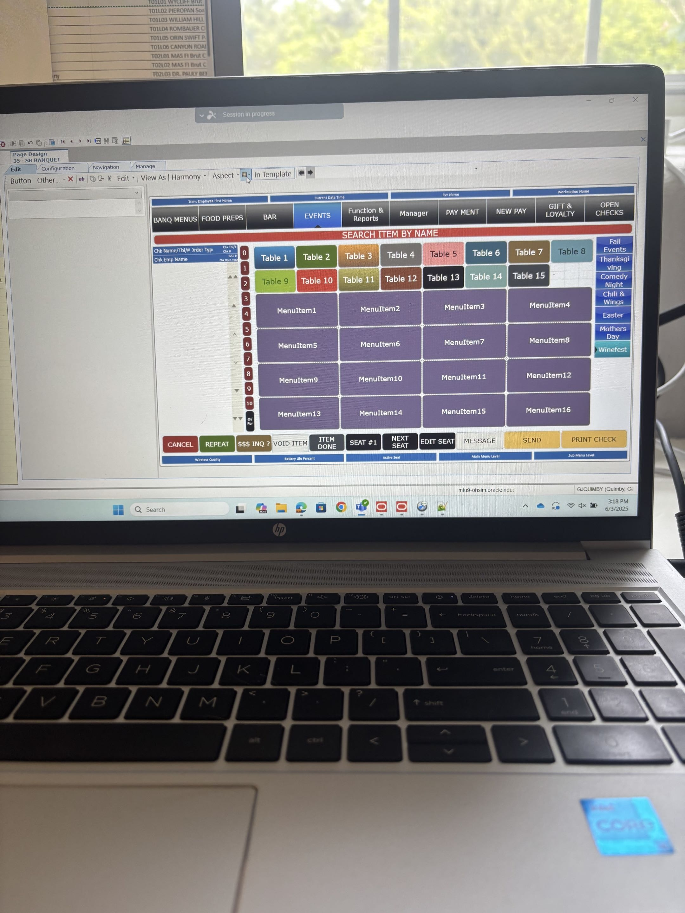
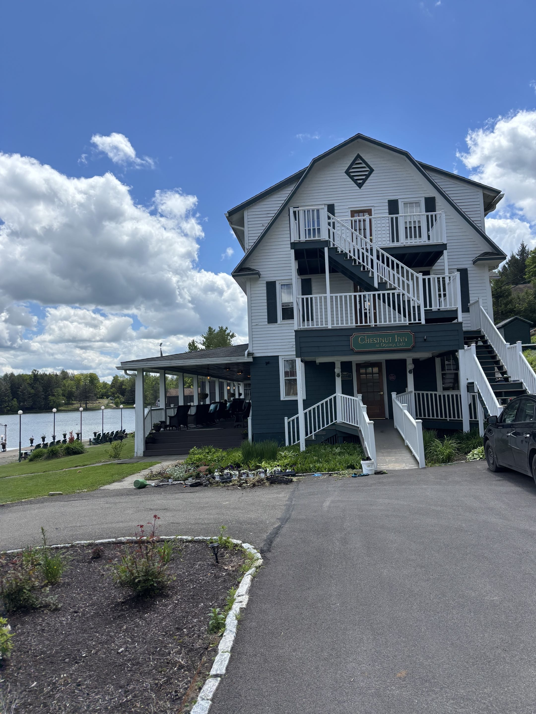
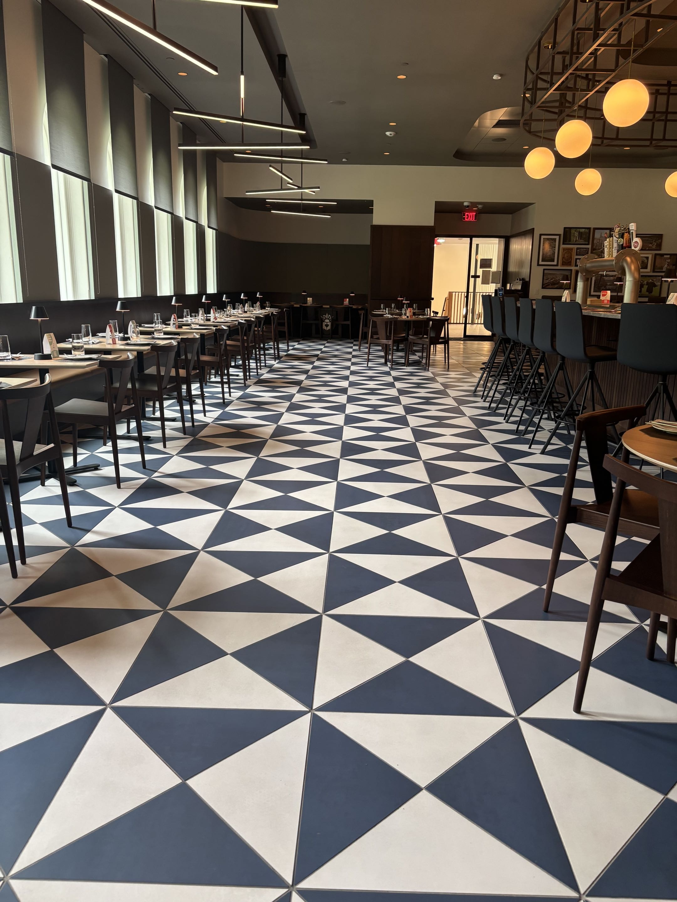
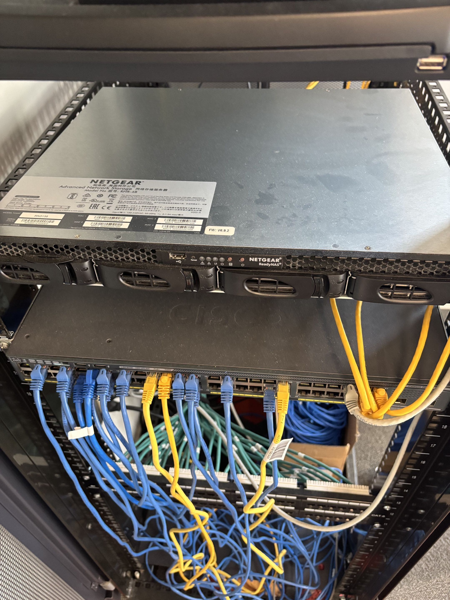
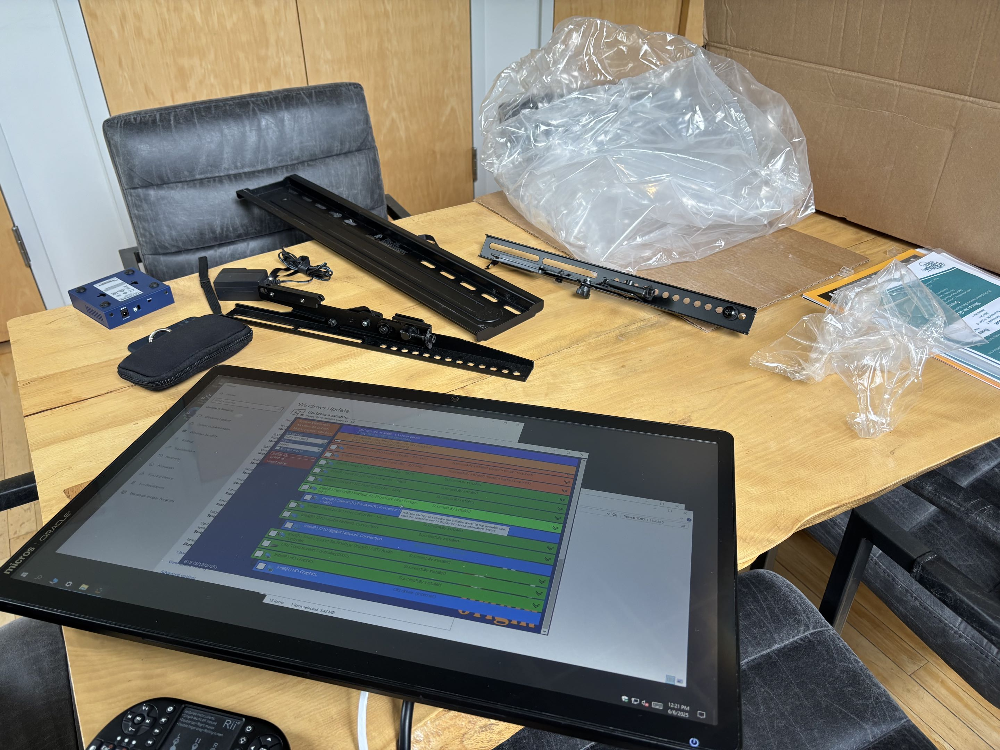

Settlers Hospitality Group
IT Intern
May 25, 2025 - August 19, 2025
Supported daily IT operations across a hospitality group with hotels, restaurants, payment systems, access control, cameras, point-of-sale infrastructure, and employee technology needs. The role blended hands-on field work with systems support, vendor coordination, and business-critical troubleshooting.
Core Responsibilities
IT Ticketing & Troubleshooting
Resolved hardware, software, account, device, and connectivity issues for staff across active hospitality environments.
Field Technology Support
Installed cabling, supported workstations, assisted with network equipment, and helped keep guest-facing systems operational.
Restaurant Systems
Configured menu items and operational data inside Enterprise Management Console for restaurant point-of-sale workflows.
Security Infrastructure
Assisted with smart locks, camera systems, payment hardware, and property access technology across multiple locations.
Featured Projects
Hotel Technology Inventory & Network Optimization
Helped document technology assets and evaluate network readiness across hotel environments, improving visibility into devices, cabling, and support needs for future maintenance.
- Mapped hardware and network-related equipment across operational properties.
- Identified technology gaps that could affect uptime, staff efficiency, or guest service.
- Improved the IT team's ability to plan replacements, upgrades, and troubleshooting visits.
Ale Mary's POS Migration
Supported point-of-sale migration work for Ale Mary's by helping configure restaurant data and prepare systems for smoother service operations.
- Programmed restaurant items in Enterprise Management Console.
- Supported accuracy between menu setup, staff workflows, and business operations.
- Reduced friction during operational transition by helping validate system details.
Payment Device Integration
Assisted with payment hardware setup and support, helping restaurant and hotel teams keep transaction systems available for customers.
- Supported device configuration and deployment in revenue-critical environments.
- Helped troubleshoot issues affecting payment reliability and staff workflows.
- Built experience with the intersection of IT support, operations, and customer experience.
Security & Access Control Deployment
Assisted with camera and smart lock installations that strengthened property security and improved day-to-day access management for hospitality teams.
- Helped install camera and smart lock systems across multiple properties.
- Supported secure access workflows for staff and property operations.
- Gained practical experience with physical security technology and field installation.
Technologies & Tools
Microsoft 365
Enterprise Management Console
POS Systems
Payment Terminals
Smart Locks
Security Cameras
Structured Cabling
Network Hardware
IT Ticketing
Hardware Troubleshooting
Skills Gained
Business-Critical Support
Learned how fast, practical IT decisions protect revenue, staff productivity, and guest experience.
Field Problem Solving
Built confidence diagnosing issues in real spaces where cabling, devices, users, and timing all matter.
Vendor & Team Communication
Practiced translating technical work into clear updates for managers, staff, vendors, and IT teammates.
Operational Awareness
Developed a stronger understanding of how hotels and restaurants depend on invisible technology systems.
"IT is a blue-collar job in disguise."
Image Gallery








